Oil & Gas ESG
Manage environmental, social, and governance performance through field sites, environmental records, social KPIs, initiatives, and regulatory compliance. The module ties ESG data to upstream, midstream, and downstream operations.
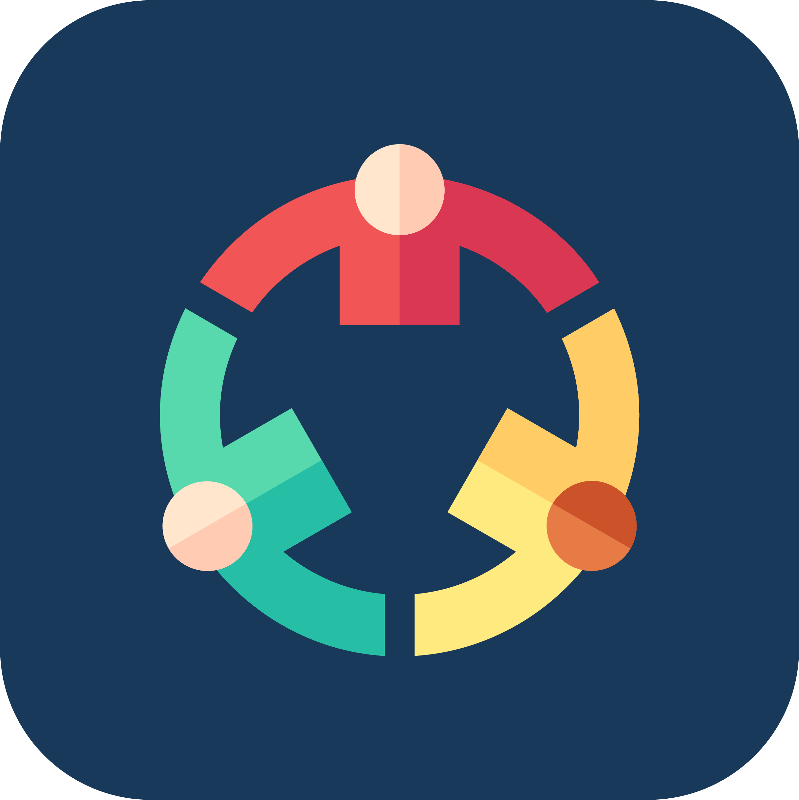
Operational ESG Hub
Use field sites as the operational anchor, then record emissions, energy, water, HSE incidents, workforce metrics, initiatives, and compliance actions from their dedicated ESG menus.
Sustainability Pillars
Why Oil ERP ESG?
Multi-Domain ESG
Environmental, social, and governance records are separated into dedicated models while remaining connected inside one ESG workspace.
Field Site Smart Buttons
Field Sites open related Emissions, Energy, and HSE records directly through smart buttons for fast operational navigation.
Action-Driven States
Emissions, energy, water, initiatives, and compliance records use explicit state buttons like Verify, Flag, Close, Start, and In Review.
Reporting Ready
Dashboard, menu segmentation, derived period fields, and grouped record structures support internal review and ESG reporting visibility.
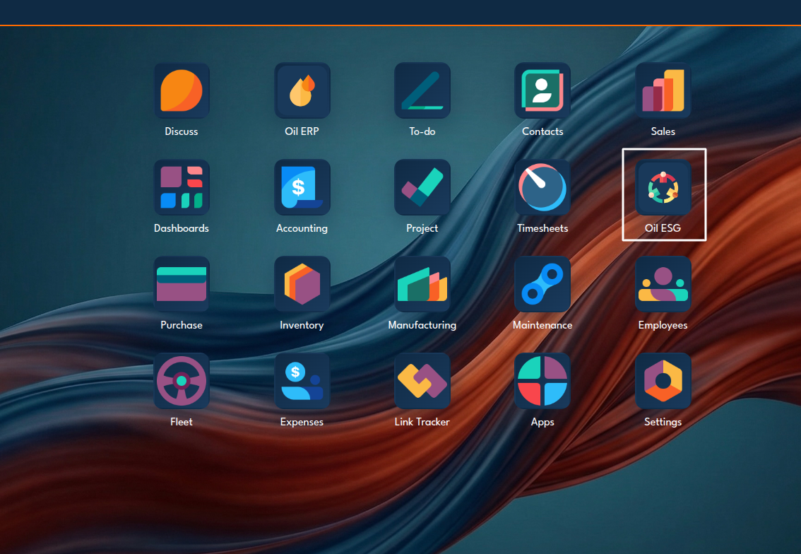
Launch the ESG Workspace
Open the dedicated Oil ESG app from the Odoo app grid to access environmental, social, governance, dashboard, and configuration menus.
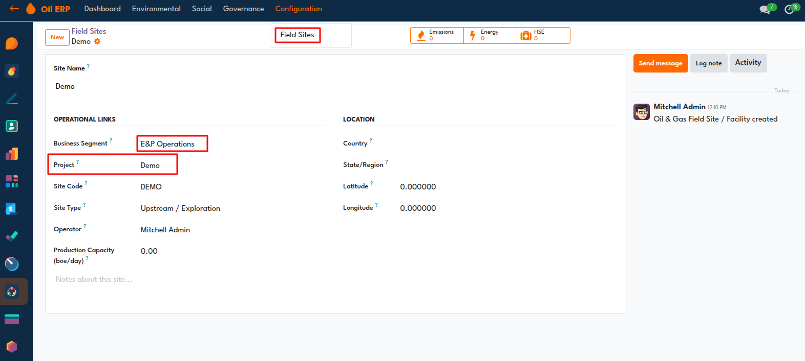
Create an Upstream Field Site
Set the site as `E&P Operations`, link it to an oil and gas project, and use the `Emissions`, `Energy`, and `HSE` smart buttons to open site-linked records.
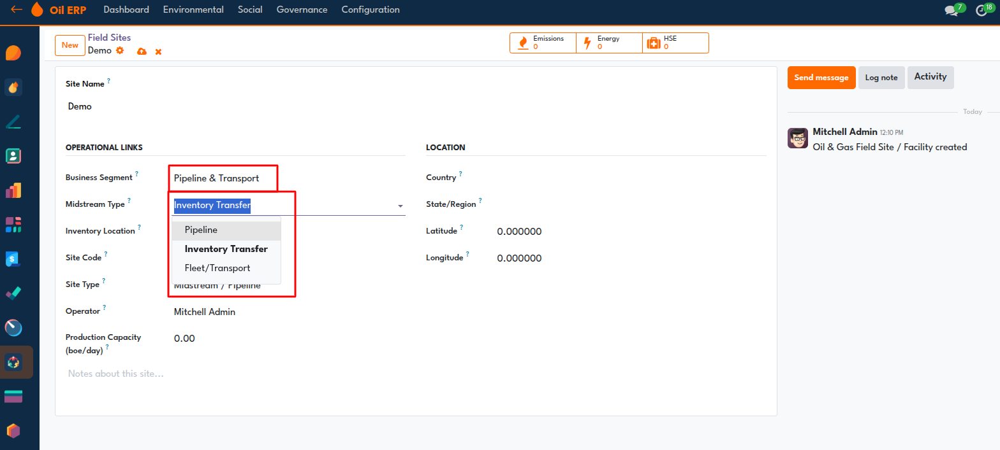
Configure Midstream Site Links
Choose `Pipeline & Transport` and use the `Midstream Type` selector to connect the site to a pipeline, inventory transfer, or fleet transport workflow.
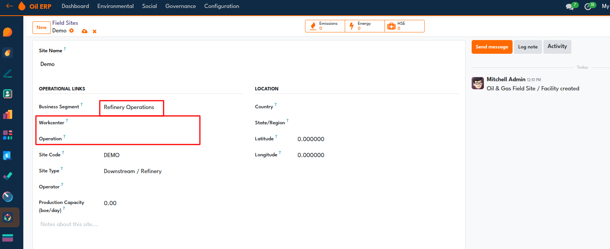
Link Refinery Sites to Workcenters
For `Refinery Operations`, connect the field site to manufacturing workcenters and operations so downstream ESG records stay tied to plant activity.
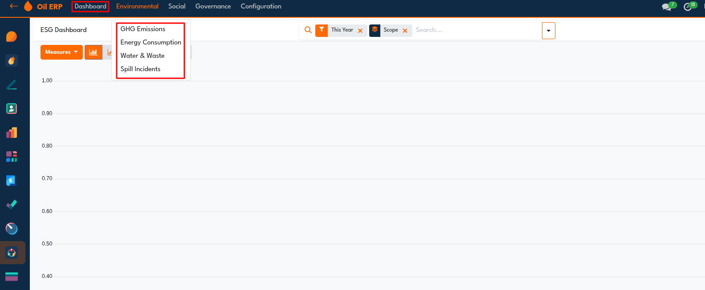
Use the ESG Dashboard Measure Selector
The dashboard lets users switch measures between `GHG Emissions`, `Energy Consumption`, `Water & Waste`, and `Spill Incidents` for comparative ESG analysis.
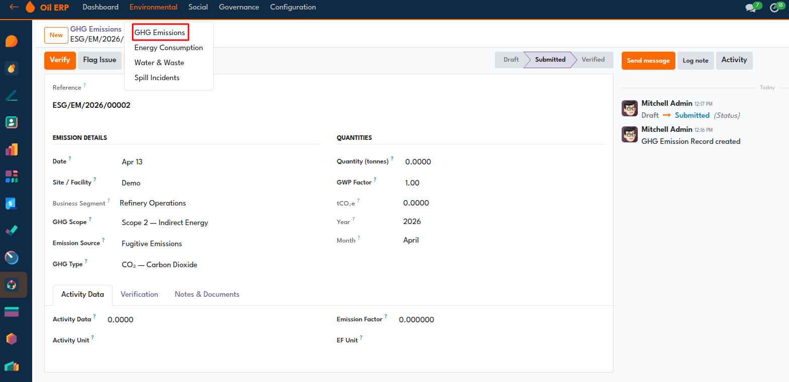
Verify and Flag Emission Records
The `Verify` button confirms the emission entry and records the verifier, while `Flag Issue` marks suspect data for review; the environmental menu also lets users switch between environmental record types.
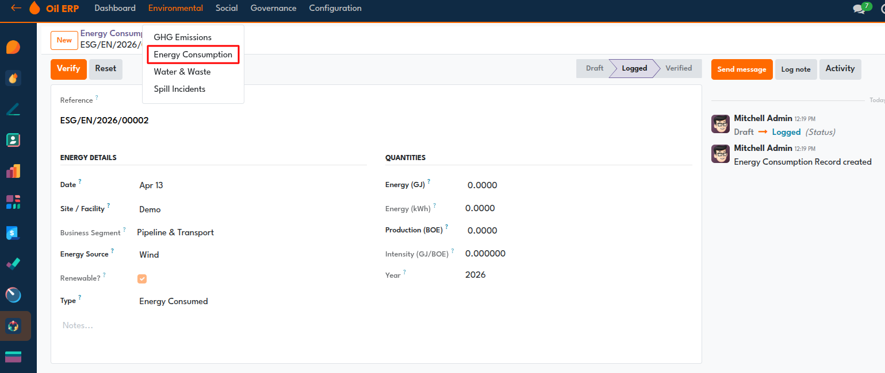
Log and Reset Energy Consumption
Energy records track source, renewable status, GJ, kWh, production BOE, and intensity. `Verify` confirms the record, and `Reset` sends it back to draft when corrections are needed.
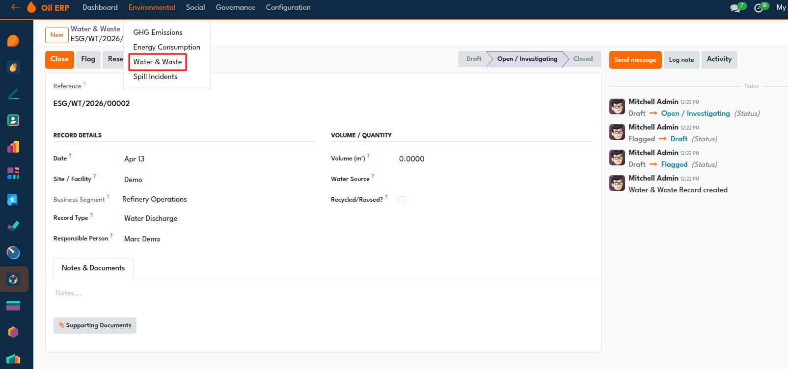
Manage Water and Waste Status
`Close` marks the record complete, `Flag` raises it for follow-up, and `Reset` returns it to draft. Supporting documents can be attached from the same form.
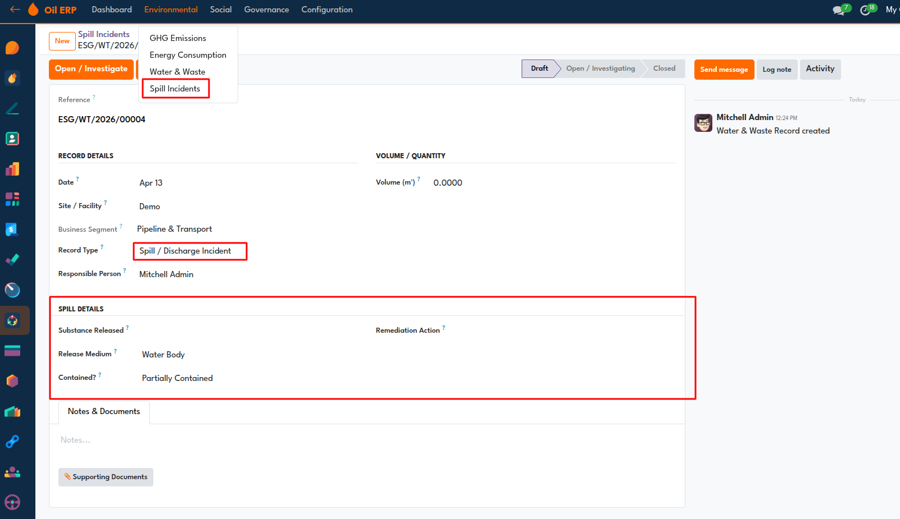
Open Spill Investigations with Incident Details
`Open / Investigate` starts the spill workflow, and the spill-specific section captures released substance, release medium, containment status, and remediation action.
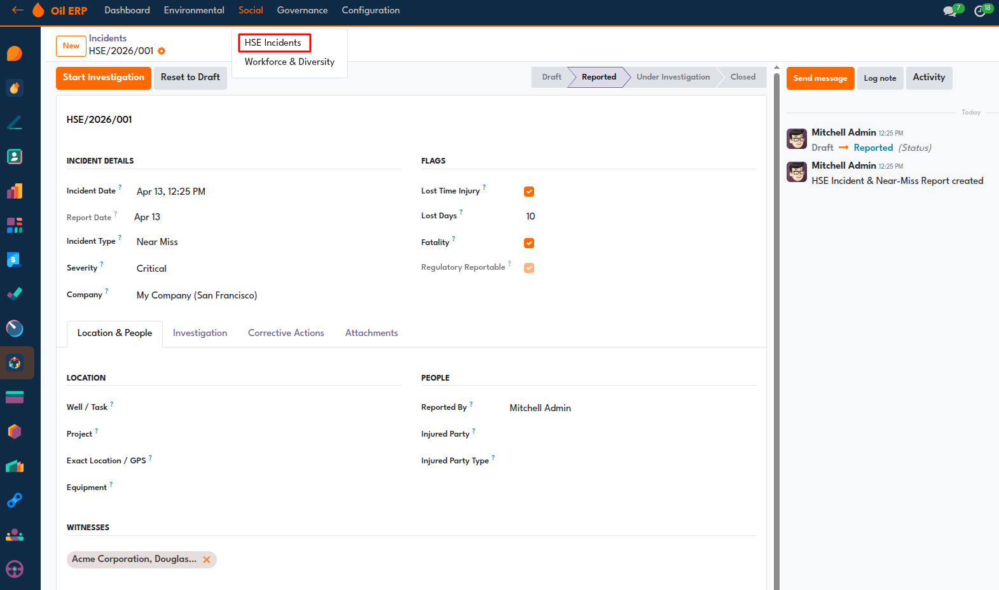
Track HSE Incidents from the Social Menu
In the social domain, `Start Investigation` moves the incident into review, `Reset to Draft` reopens it, and the status bar shows the HSE incident lifecycle. The social menu switches between `HSE Incidents` and `Workforce & Diversity`.
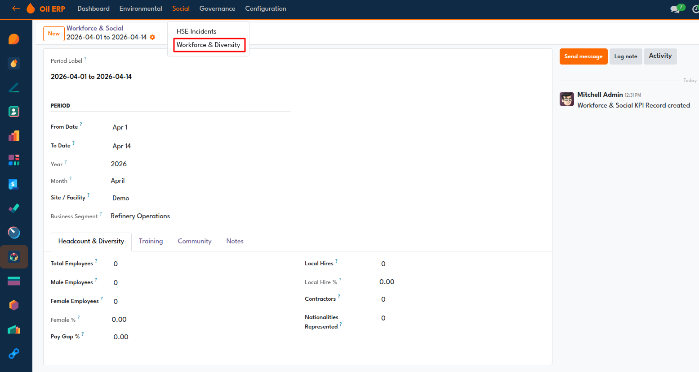
Record Workforce and Diversity Metrics
Use the dynamic reporting period, site, and business segment to capture headcount, diversity, local hires, contractors, training, and community KPI values.
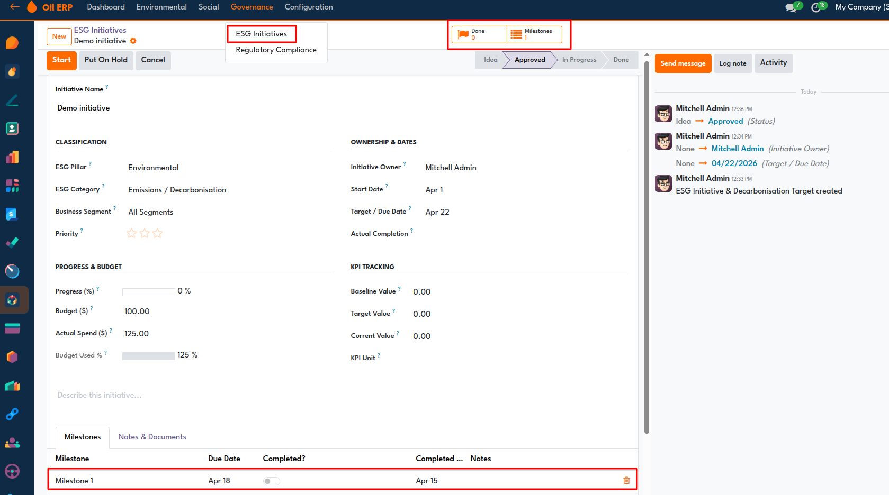
Advance ESG Initiatives with Milestones
`Start` moves an approved initiative into execution, `Put On Hold` pauses it, and `Cancel` stops it. The `Done` and `Milestones` smart buttons show completion progress and milestone counts directly on the initiative form.
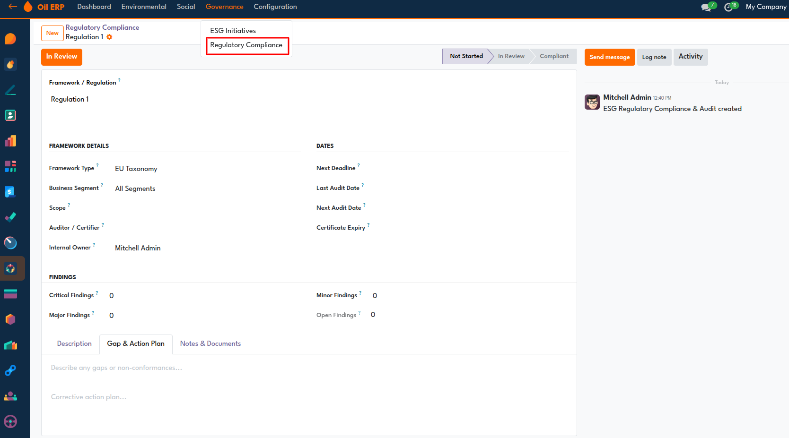
Move Compliance Records into Review
`In Review` pushes the compliance record into audit review, while the status bar tracks `Not Started`, `In Review`, and `Compliant` against findings, deadlines, owners, and action plans.
GHG Emissions Workflow
Track scope, source, GHG type, activity data, and CO2e values, then move records through draft, submitted, verified, and flagged states.
Energy Usage Logging
Capture energy source, renewable status, consumed or produced type, GJ, kWh, BOE, and derived energy intensity with log and verify actions.
Water Management
Manage water withdrawal, discharge, recycled water, produced water, spills, and waste records with open, close, flag, and reset controls.
ESG Initiatives
Manage initiatives from idea to approved, in progress, on hold, done, or cancelled while tracking KPI baseline, target, budget, and milestone completion.
Compliance Review
Track frameworks, deadlines, audit dates, findings, gap descriptions, and action plans with review and compliance status actions.
Field Site Linkage
Use field sites as ESG anchors across upstream, midstream, and downstream segments, with smart buttons for related emissions, energy, and HSE records.
Segment-Specific Site Logic
Sites dynamically expose project links for upstream, transport links for midstream, and workcenter or operation links for downstream workflows.
Social and HSE Records
Switch between HSE incidents and workforce records from the Social menu while maintaining site and business-segment context.
Release 19.0.1.0.0
1st April, 2026
Initial commit